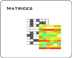

Data formatsThere are different kinds of data needed for different features in Gitools. |
|
Matrices |
|
|  |
A matrix is a bidimensional structure in which for each dimension (row and column) there is a value (cell). All the values are of the same type (for example all are p-values or log2ratios). For R users it is the equivalent to matrix. Matrices can contain continuous values or binary values (1, 0). There could be empty values too (usually represented as a hyphen '-' in text file formats). Matrices provide values for a number of items (i.e. one gene for each row) in several conditions (i.e. one condition for each column). |
Modules |
|
|
Modules are lists of genes or other biological elements with a common biological property. They are also known as gene sets or concepts. For example, genes in the same pathway or genes regulated by the same transcription factor form a module. You can have many modules, i.e one for each known pathway or TF as seen in the example before. |
|
Tables |
|
|
A table represents a list of attributes, where each row is an element of the list and each column an attribute. Each attribute can be of different type (i.e. one column with the gene id and other with a log2ratio). For R users it is the equivalent to data.frame. In Gitools they are used for different things, for providing extra attributes to row and column labels in heatmaps and for representing results of some analysis. |
|